The Season 16/17/Shada Scarf
END TO END
This scarf is simply the last remnant of the original scarf attached to the stunt duplicate. The two scarves are not the same width (66 and 60 stitches) but are joined nonetheless. There is some bleaching or fading that occurred on the second purple stripe of the stunt duplicate side.
TASSELS
The number of tassels changed in practically every episode! On the stunt duplicate side the usual 12 seemed to survive for the most part. These tassels will space evenly across 60 stitches. Start on stitch #3, leave 4 stitches between each tassel and end on stitch #58. More about this will be added to the knitting tips section. The original side tended to have several strands hanging on that were barely tassels at all.
END OF THE LINE

This version of the scarf got one last remix for the unscreened episode "Shada." The stunt duplicate side remained almost unchanged except for the loss of the purple end that was replaced with a new section in light grey. The original side received a few cuts, and the segments were sewn back together in a new order with one section flipped to the wrong side. This side of the scarf also got a new end knitted on in burgundy. Several patches were sewn on. These were made from the the waistcoat (or the same fabric) that was worn in Season 13 and 14. Rather than a real houndstooth, the fabric is actually printed velvet.
The inches version of the pattern includes actual widths and lengths measured by the previous scarf owner. This will help you make an ultra replica!
Click on these for larger photos of each section of the Shada scarf as it is today.
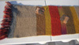 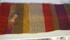 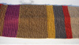 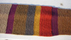 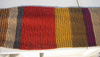


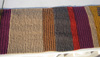 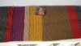 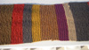 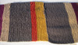 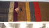


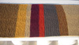 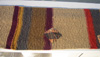 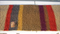 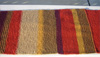 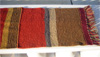


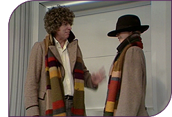
ROMANA'S SCARVES
Romana donned two different long scarves in "Destiny of the Daleks." The first was a duplicate of the S16/17 scarf in slightly different colors. The second was light cream with long tassels.
Romana's duplicate was knitted on larger needles with (probably) worsted weight wool. The colors are similar apart from the darker, less brownish green. The grey appears to be heathered, and the purple is more burgundy. It doesn't replicate the S16/17 exactly. It has fewer stripes, different row counts and ends in 2 unique stripes. The pattern presented here is only partly verified. There are no color recommendations at this time. Knit at your own risk!
I don't know the whereabouts of the first one, who knitted it or why it didn't replace Tom's highly worn scarf, but June Hudson was able to clarify some details about the construction of the light cream one. It is simply a strip of silk (or silk-like) fabric with finished edges and tassels. It's not even a flattened fabric tube.